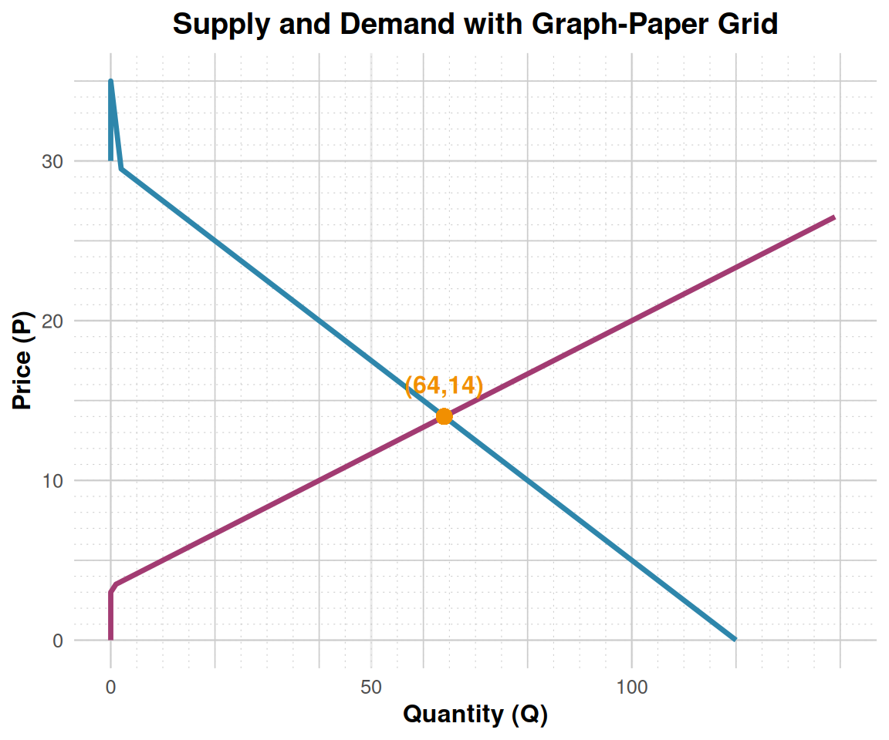

Here’s the updated supply-demand-equilibrium.qmd with a new Graph Paper Grids section and ggplot2 code for background grids:
---
title: "Linear Demand and Supply Models"
subtitle: "Based on Cowen & Tabarrok MRU Principles of Microeconomics, Ch. 3–4"
author: "Professor [Your Name]"
date: today
format:
html:
toc: true
toc-depth: 3
code-fold: false
theme: cosmo
pdf:
toc: true
number-sections: true
geometry: margin=1in
execute:
warning: false
message: false
---
# Graph Paper Grids
This section overlays demand and supply curves onto a graph-paper style grid (light gray major and minor grid lines) to aid students in reading values directly from the plot.
::: {.cell}
```{.r .cell-code}
# Sample curves for demonstration
demand <- create_demand(120, 4)
supply <- create_supply(-20, 6)
p_vals <- seq(0, 35, 0.5)
df_grid <- tibble(
P = p_vals,
Qd = demand(p_vals),
Qs = supply(p_vals)
)
ggplot(df_grid, aes(x = Qd, y = P)) +
# Graph-paper grid with major and minor lines
geom_hline(yintercept = seq(0, 35, 5), color = grid_color, size = 0.3) +
geom_vline(xintercept = seq(0, 140, 20), color = grid_color, size = 0.3) +
geom_hline(yintercept = seq(0, 35, 1), color = grid_color, linetype = "dotted", size = 0.2) +
geom_vline(xintercept = seq(0, 140, 5), color = grid_color, linetype = "dotted", size = 0.2) +
# Demand and supply curves
geom_line(aes(x = Qd, y = P), color = demand_color, size = 1.2) +
geom_line(data = df_grid, aes(x = Qs, y = P), color = supply_color, size = 1.2) +
# Equilibrium point
geom_point(aes(x = 64, y = 14), color = equilibrium_color, size = 3) +
annotate("text", x = 64, y = 14 + 2, label = "(64,14)", color = equilibrium_color, fontface = "bold") +
labs(
title = "Supply and Demand with Graph-Paper Grid",
x = "Quantity (Q)",
y = "Price (P)"
) +
xlim(0, 140) + ylim(0, 35)Warning: Using `size` aesthetic for lines was deprecated in ggplot2 3.4.0.
ℹ Please use `linewidth` instead.Warning in geom_point(aes(x = 64, y = 14), color = equilibrium_color, size = 3): All aesthetics have length 1, but the data has 71 rows.
ℹ Please consider using `annotate()` or provide this layer with data containing
a single row.Warning: Removed 17 rows containing missing values or values outside the scale range
(`geom_line()`).
:::
```
Back to top